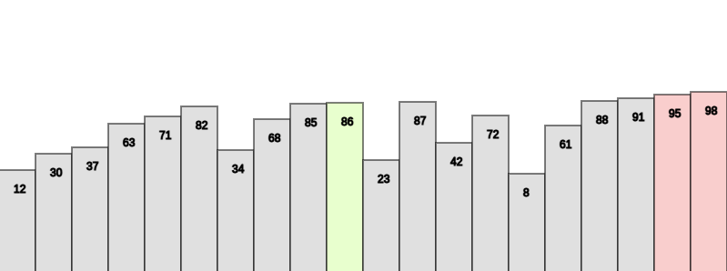

What is a Bubble Sort?
Bubble sort, also referred to as comparison sort, is a simple sorting algorithm that repeatedly goes through the list,
compares adjacent elements and swaps them if they are in the wrong order. This is the simplest algorithm as far as implementation
but is not very efficient.
Bubble Sort: Basic Steps Overview
Step 1 - Starting with the first element(index = 0), compare the current element with the next element of the array.
Step 2 - If the current element is greater than the next element of the array, swap them.
Step 3 - If the current element is less than the next element, move to the next element. Repeat Step 1.
Bubble Sort Example:
Consider the following array: [ 5, 1, 4, 2, 8 ].
First Pass:
[ 5, 1, 4, 2, 8 ] –> [ 1, 5, 4, 2, 8 ] Here, algorithm compares the first two elements, and swaps since 5 > 1.
[ 1, 5, 4, 2, 8 ] –> [ 1, 4, 5, 2, 8 ] Swap since 5 > 4
[ 1, 4, 5, 2, 8 ] –> [ 1, 4, 2, 5, 8 ] Swap since 5 > 2
[ 1, 4, 2, 5, 8 ] –> [ 1, 4, 2, 5, 8 ] Now, since these elements are already in order (8 > 5), algorithm does not swap them.
Second Pass:
[ 1, 4, 2, 5, 8 ] –> [ 1, 4, 2, 5, 8 ]
[ 1, 4, 2, 5, 8 ] –> [ 1, 2, 4, 5, 8 ] Swap since 4 > 2
[ 1, 2, 4, 5, 8 ] –> [ 1, 2, 4, 5, 8 ]
[ 1, 2, 4, 5, 8 ] –> [ 1, 2, 4, 5, 8 ]
Now, the array is already sorted, but our algorithm does not know if it is completed. The algorithm needs one whole pass
without any swap to know it is sorted.
Third Pass:
[ 1, 2, 4, 5, 8 ] –> [ 1, 2, 4, 5, 8 ]
[ 1, 2, 4, 5, 8 ] –> [ 1, 2, 4, 5, 8 ]
[ 1, 2, 4, 5, 8 ] –> [ 1, 2, 4, 5, 8 ]
[ 1, 2, 4, 5, 8 ] –> [ 1, 2, 4, 5, 8 ]

Geeks For Geeks (Source)
Study Tonight (Source)
X